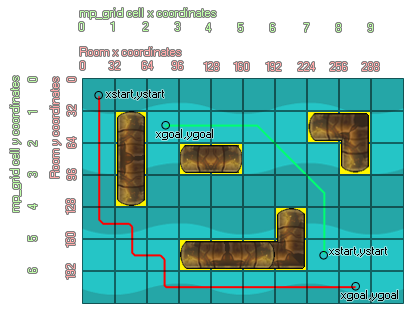

mp_grid_path
This function computes a path through the given mp_grid.
Syntax :
mp_grid_path(id, path, xstart, ystart, xgoal, ygoal, allowdiag);
| Argument | Description |
|---|---|
| id | Index of the mp_grid that is to be used |
| path | index of the path that is to be used by the function |
| x start | Starting x coordinate of the new path |
| y start | Starting y coordinate of the new path |
| xgoal | Finishing x coordinate of the new path |
| ygoal | Finishing y coordinate of the new path |
| allowdiag | Indicates whether diagonal moves are allowed instead of just horizontal or vertical |
Returns: Boolean.
Description
With this function you can create a path that will navigate from a start point to a finish point using an mp_grid that you have previously defined, avoiding any obstacles that have already been added into the grid.
The xstart and ystart arguments indicate the start of the path in grid coordinates, while xgoal,ygoal arguments indicate the destination. You can also select either horizontal/vertical movement only, or allow full diagonal
movements by specifying true in the allowdiag argument. The function returns either true (it succeeded in finding a path) or false (it failed) as well as setting the chosen path. In the following image, you can see how this
all works together :

As you can see, the "pipe" objects have been added into the grid, meaning that any path created has to go around them. There are two paths created in the image, one (green) has been made with diagonals allowed
and the other (red) without. The difference between the two is pretty obvious with the green path appearing much more "elegant" and direct, but it all depends what use you are going to put them to which one you
prefer. Note that the path is independent of the current instance - it is a path through the grid, not a path for a specific instance, even though a specific instance may have the variable that stores the path index. You
may also need to debug these paths to see how they are made and interact within the game enviroment, in which case you should be using the
draw_path function.
NOTE : The path must have been previously created (either in code with path_add or as a resource) and will be replaced by
the path generated by this function.
Example :
globalvar grid;
grid = mp_grid_create(0, 0, room_width div 32, room_height div 32, 32, 32);
mp_grid_add_instances(grid, obj_wall, false);
with (obj_Enemy)
{
path = path_add();
if mp_grid_path(grid, path, x, y, obj_Player.x, obj_Player.y, 1)
{
path_start(path, 0, 3, 0);
}
}
The above code creates a global variable "grid", then generates an mp_grid and assigns its index (id) to that variable for use in all further mp_grid function calls. It then adds all instances of "obj_Wall" into the grid before getting all instances of "obj_Enemy" to create a path and then use mp_grid_path to calculate a rout from their position to the position of "obj_Player". If a route exists then the object starts itself along the path.